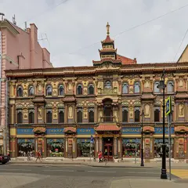
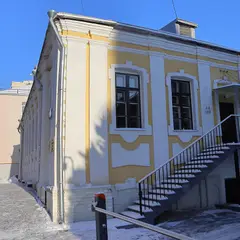
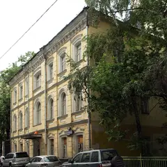
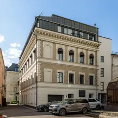
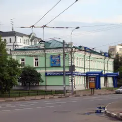
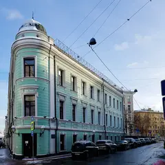
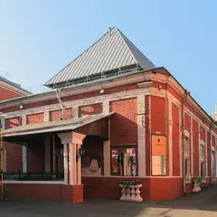
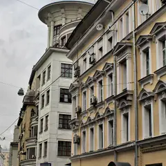

Места по типу · данные на 15 октября
Кофейни и пекарни Москвы
79 кофеен и пекарен: завтраки, кофе с собой для прогулки и места, где спокойно поговорить, — например, «Перезвон», «Чайный дом на Мясницкой» и «A-House Cafe». 72 места — недорогие, примерно до 1 500 ₽ на человека. Хороший старт для первого свидания или утра выходного дня.
- 79 мест
- 45 планов
- 9 округов
Кофейни и пекарни 40 из 79
Пятницкая ул., 4/2, стр. 9
Новое
Кофе и выпечка под высокими сводами светло-зелёной колокольни XVIII века у храма Иоанна Предтечи под Бором. В тёплые дни столики стоят во дворике храма.
Подробнее и маршрут: ПерезвонПозвать сюда: Перезвон
Фото здания: Dmitry Ivanov., CC BY-SA 4.0 · Wikimedia Commons

ул. Мясницкая, 19
Новое
Дом чаеторговца Перлова, украшенный под китайскую пагоду к приезду посла императора: драконы, фонари и изогнутые карнизы. Внутри до сих пор работает чайный магазин с деревянными прилавками.
Подробнее и маршрут: Чайный дом на МясницкойПозвать сюда: Чайный дом на Мясницкой
Фото: A.Savin, Free Art License · Wikimedia Commons

Большой Афанасьевский пер., 20
Кафе в доме архитектуры и дизайна с лекторием и библиотекой. До 19:00.
Подробнее и маршрут: A-House CafeПозвать сюда: A-House Cafe
Фото здания: Александр Сигачёв, CC BY-SA 4.0 · Wikimedia Commons

ул. Малая Бронная, 19
Греческий йогурт и выпечка во флагмане Ekonika на Патриарших. До 22:00.
Подробнее и маршрут: Ekonika Yogurt BarПозвать сюда: Ekonika Yogurt Bar
Фото здания: NVO, CC BY-SA 3.0 · Wikimedia Commons
Чистопрудный бул., 12, корп. 4
Угловое кафе с подшивками старых журналов, сидром и паштел-де-ната. 9–22.
Подробнее и маршрут: Kiosk 1936Позвать сюда: Kiosk 1936
Фото здания: Mike1979 Russia, CC BY-SA 3.0 · Wikimedia Commons

Тверской бул., 14, стр. 5
Французская кондитерская с панорамными окнами на бульвар, всё пекут на месте. 9–23.
Подробнее и маршрут: NiqaПозвать сюда: Niqa
Фото здания: Mike1979 Russia, CC BY-SA 3.0 · Wikimedia Commons
Гоголевский бул., 11
Современная русская чайная: 80+ сортов, отдельные чайные комнаты и дегустации. 9–22.

ул. Большая Серпуховская, 5
Завтраки весь день, кофе и вино по бокалам у Добрынинской. 8–22.
Подробнее и маршрут: FinchПозвать сюда: Finch
Фото здания: NVO, CC BY-SA 3.0 · Wikimedia Commons

ул. Большая Никитская, 17, стр. 1
Концепт-стор во французском стиле с камином, библиотекой и выпечкой Masa Madre.
Подробнее и маршрут: NuselfПозвать сюда: Nuself
Фото: CaneCorso, CC BY-SA 4.0 · Wikimedia Commons

ул. Неглинная, 14, стр. 1А
Маленькая кофейня в красном дереве у Трубной. 8–23.
Подробнее и маршрут: Surf Coffee x NeglinkaПозвать сюда: Surf Coffee x Neglinka
Фото: Ludvig14, CC BY-SA 4.0 · Wikimedia Commons

Большой Козихинский пер., 12/2
Пекарня на закваске у Пушкинской: профитроли и круассаны. 8–22.
Подробнее и маршрут: ValikoПозвать сюда: Valiko
Фото здания: Andris Malygin, CC BY 3.0 · Wikimedia Commons
пр. Мира, 119, стр. 40
Пекарня Masa Madre в историческом павильоне «Хлебопродукты» на ВДНХ. 12–22.
Подробнее и маршрут: Cafeteria de MadreПозвать сюда: Cafeteria de Madre
Толмачёвский пер., 5, стр. 1
Кофейня с завтраками и бранчами в двух шагах от Третьяковской галереи.
Сходненская ул., 50
Новое
Семейная кофейня в паре минут от метро «Сходненская»: авторские десерты, небольшое меню от повара, стильный интерьер и музыка. Алкоголя нет, в сб до 23:00.
ул. Перерва, 56/2
Новое
Кафе со своей пекарней у метро «Братиславская»: завтраки с 8:30, круассаны, «Наполеон» и масала, приглушённый свет — удобно для неспешной встречи.
Светлогорский пр., 13, стр. 7
Новое
Кофейня-лофт в парке усадьбы Братцево: мягкие диваны, книги, завтраки и веранда, по вечерам тематические встречи. Сначала гуляем по старому парку над Сходней. 9–22.
ул. Юных Ленинцев, 3
Новое
Авторская кофейня в Текстильщиках: капучино 150–350 ₽, лимонады и чаи, настольные игры и приглушённый свет. Можно с собакой и с ноутбуком.
2-я Бауманская ул., 9/23, стр. 3
Экспресс-кофейня в креативном пространстве Суперметалл. 9–21.
Подробнее и маршрут: Человек и пароходПозвать сюда: Человек и пароход
ул. Маршала Мерецкова, 6
Новое
Кофейня у метро «Октябрьское Поле»: фильтр со смородиной, раф с лавандой, канеле и сырники. Много мест и спокойно — подходит для долгого разговора.
ул. Эдварда Грига, 17 (ЖК «Скандинавия», Коммунарка)
Новое
Кофейня уровня центра в ЖК «Скандинавия»: фильтр и авторские напитки, выпечка на витрине и хороший плейлист. Пн–пт 8–21, сб–вс 9–21.
Мантулинская ул., 5, стр. 11, парк «Красная Пресня»
Кофейня в павильоне-водокачке «Октагон» — последнем уцелевшем здании усадьбы Студенец в парке «Красная Пресня».
Подробнее и маршрут: Mátes в «Октагоне»Позвать сюда: Mátes в «Октагоне»
ул. Садовая-Кудринская, 32, стр. 2
Новое
Уютное кафе в голубых тонах у «Маяковской»: завтраки с 9 утра, настольные игры и негромкая музыка — подходит для долгого разговора.
Троицк, Городская ул., 20
Новое
Уютная кофейня в Троицке: много десертов, завтраки с омлетом и блинчиками, летом веранда, на полках — подарки и сувениры. Пн–пт 8–21, сб–вс 10–21.
Подробнее и маршрут: Sweet Belka CoffeeПозвать сюда: Sweet Belka Coffee
ул. Зорге, 9, корп. 1
Кафе и мастерская современной флористики у Полежаевской.
Зубовский бул., 2, стр. 5
Кафе во дворе Музея Москвы: натуральное вино, встречи с актёрами и бранчи с DJ. 9–00.
ул. Чаянова, 12
Минималистичное кафе у Новослободской: завтраки, вино и спортивные трансляции.
Подробнее и маршрут: Культурный кодПозвать сюда: Культурный код
Химки, Совхозная ул., 16
Районная пекарня с кофе с собой, с 8:00 до 23:00 — взять круассан и пойти гулять на набережную.
Подробнее и маршрут: Пекарня «Печь!»Позвать сюда: Пекарня «Печь!»
Малый Каретный пер., 6
Булочная в цоколе от создателей Michebakery, рядом сад «Эрмитаж». Чек ~750 ₽.
Садовническая ул., 80
Новое
Маленькая пекарня в Замоскворечье с хрустящими даниш и сливочными круассанами — постоянный участник подборок «лучших булок Москвы». Мест мало: берите с собой и гуляйте вдоль Водоотводного канала.
Мосфильмовская ул., 55
Новое
Двухэтажная кофейня-«пещера» с коврами, глиняными горшками и полками книг; урбеч мелют на мельнице прямо у входа, кофе варят на песке. Место вирусное: чтобы увидеть интерьер без людей, приходите к открытию.
2-я Тверская-Ямская ул., 18
Новое
Светлая пекарня-кофейня у Маяковской с сезонной выпечкой — осенью здесь пекут круффины с тыквой и пеканом. Удобно зайти перед концертом в Зале Чайковского.
ул. Чаплыгина, 20, стр. 7
Новое
Пекарня у Чистых прудов, куда стоят очереди за шведскими булками и сезонными бриошами. Приходите утром — к обеду популярное разбирают.
ул. Усачёва, 11И
Спешелти-кофе, горячие завтраки и выпечка в Хамовниках. Будни 8–22, выходные 9–22.
Подробнее и маршрут: ABC Coffee RoastersПозвать сюда: ABC Coffee Roasters
Ленинградский пр., 29, корп. 4
Завтраки весь день и выставки молодых художников прямо в зале. Чек ~1 650 ₽.
Подробнее и маршрут: Brunchy BrunchПозвать сюда: Brunchy Brunch
Новослободская ул., 16
16 видов огромных круассанов и панорамные окна. 8–22.
Подробнее и маршрут: Croissant AtelierПозвать сюда: Croissant Atelier
Никольская ул., 10/2
Кофейня по мотивам известной ереванской: каждый час под музыку зёрна летят по прозрачным трубам.
Подробнее и маршрут: Half TrillionПозвать сюда: Half Trillion
ул. Кузнецкий Мост, 13/9, стр. 1
Кофейня на втором этаже флагмана IRNBY в доходном доме Третьяковых: дерево и винтаж.
ул. Остоженка, 27, корп. 3
Новое
Французская пекарня с тихой верандой в переулке за Остоженкой: синие столы, чашки в цветочек и выпечка на витрине. Завтраки весь день, в тёплый сезон — на веранде.
Красная пл., 3
Кафе бренда Limé на втором этаже ГУМа: муссовые пирожные и кофе. 10–22.
ул. Солянка, 1/2, стр. 1
Двухэтажная пекарня в копенгагенском стиле. 8–00.


Готовые планы с этими местами 12 из 45
- Дом Пороховщикова · Деревянный терем · м. Арбатская
- 7 минут пешкомДом Мельникова · Архитектура
- 9 минут пешкомA-House Cafe · Кафе
Бревенчатый терем среди каменных домов, цилиндры Мельникова с ромбами окон и кофе на Афанасьевском — тихая сторона центра.
Открыть план: Арбатские переулки без АрбатаПозвать сюда: Арбатские переулки без Арбата
Фото: Lite, CC BY-SA 3.0 · Wikimedia Commons
- Сова · Кофейня · м. Волжская
- 27 минут пешкомУсадьба Люблино · Усадьба
Капучино за 150–350 ₽ в «Сове», куда можно с собакой, а потом прогулка к дворцу-ротонде и пруду усадьбы Люблино — на двоих выйдет дешевле одного ужина.
Открыть план: Кофе в «Сове» и Люблино с собакойПозвать сюда: Кофе в «Сове» и Люблино с собакой
Фото: NVO, CC BY 3.0 · Wikimedia Commons
- Перезвон · Кофейня в колокольне · м. Третьяковская
- 9 минут пешкомТретьяковка на Кадашёвской · Музей
Капучино под сводами колокольни XVIII века на Пятницкой, потом выставка в Третьяковке на Кадашёвской набережной.
Открыть план: Кофе в колокольне и КадашиПозвать сюда: Кофе в колокольне и Кадаши
Фото здания: Dmitry Ivanov., CC BY-SA 4.0 · Wikimedia Commons
- Московский планетарий · Планетарий · м. Баррикадная
- 11 минут пешкомShort talk · Кафе
Звёздное небо под огромным куполом планетария, а потом кафе Short talk: кофе, настольная игра и негромкая музыка выручат, если разговор сначала не клеится.
Открыть план: Планетарий и настолкиПозвать сюда: Планетарий и настолки
Фото: A.Savin, Free Art License · Wikimedia Commons
- Посёлок «Сокол» · Исторический посёлок · м. Сокол
- 22 минуты пешкомClara · Кофейня
Тихие улицы посёлка «Сокол» с деревянными домами 1920-х, а потом Clara у «Октябрьского Поля»: мест много, раф с лавандой и канеле — можно сидеть и говорить часами.
Открыть план: Посёлок художников и кофеПозвать сюда: Посёлок художников и кофе
Фото: A.Savin, CC BY-SA 3.0 · Wikimedia Commons
- Клуб имени Зуева · Конструктивизм · м. Белорусская
- 9 минут пешкомКультурный код · Кафе
Конструктивизм Голосова: вечером стеклянная лестница светится изнутри. Перед этим — кофе в «Культурном коде» на Чаянова.
Открыть план: Стеклянный цилиндр клуба ЗуеваПозвать сюда: Стеклянный цилиндр клуба Зуева
Фото: Guldfisken, CC BY-SA 3.0 · Wikimedia Commons
- Сходненская чаша · Природный памятник · м. Сходненская
- 17 минут пешкомИду лесом · Кофейня в усадьбе
Вид сверху на Сходненскую чашу — природный амфитеатр в Тушине, — потом по старому парку над Сходней в «Иду лесом»: мягкие диваны, книги и завтраки.
Открыть план: Сходненская чаша и кофейня в усадьбеПозвать сюда: Сходненская чаша и кофейня в усадьбе
Фото: barmalei1971, CC BY-SA 3.0 · Wikimedia Commons
- Хохловская площадь · Площадь-амфитеатр · м. Китай-город
- 1 минута пешкомOn Sight · Кофейня
Ступени амфитеатра у куска стены XVI века, кривые переулки горки и кофе через дорогу на Покровке.
Открыть план: Хохловка и Ивановская горкаПозвать сюда: Хохловка и Ивановская горка
Фото: T3ru, CC BY-SA 4.0 · Wikimedia Commons
- Гоголевский бульвар · Бульвар · м. Кропоткинская
- 4 минуты пешкомНитка · Русская чайная
Гоголевский бульвар под жёлтыми липами и долгий чай в отдельной комнате «Нитки».
Открыть план: Бульвар и самоварПозвать сюда: Бульвар и самовар
Фото: Alina Vozna, CC BY-SA 4.0 · Wikimedia Commons
- Галерея Церетели · Музей · м. Парк культуры
- 16 минут пешкомНитка · Русская чайная
Зимний сад и скульптуры в особняке на Пречистенке, потом чаепитие в отдельной комнате «Нитки».
Открыть план: Галерея Церетели и русская чайнаяПозвать сюда: Галерея Церетели и русская чайная
Фото: Sigwald, CC BY-SA 4.0 · Wikimedia Commons
- Петровский путевой дворец · Дворец · м. Петровский парк
- 19 минут пешкомBrunchy Brunch · Арт-бистро
Краснокирпичный дворец в псевдоготике у «Динамо» (внутрь только с экскурсией), а потом завтраки весь день и выставки молодых художников в Brunchy, 19 минут пешком.
Открыть план: Готический дворец и бранчПозвать сюда: Готический дворец и бранч
Фото: WM wm WM, CC BY-SA 4.0 · Wikimedia Commons
- Усадьба Толстого в Хамовниках · Музей · м. Парк культуры
- 13 минут пешкомУсадьба Трубецких · Парк
- 1 минута пешкомRébellion · Кафе
Дом и сад, где Толстой жил зимами, потом минут пятнадцать пешком до старых лип и пруда в усадьбе Трубецких, а рядом — завтраки и кофе в Rébellion.
Открыть план: Две усадьбы ХамовниковПозвать сюда: Две усадьбы Хамовников
Фото: A.Savin, CC BY-SA 3.0 · Wikimedia Commons


Как позвать
- Выбери план, место или событие — в карточке адрес, цены и маршрут в Яндекс Картах.
- Нажми «Позвать сюда» — соберётся приглашение-игра для свидания или голосование для компании.
- Отправь ссылку в любой мессенджер: тебе ответят, а компания отметит, куда и когда может. Бесплатно и без регистрации.